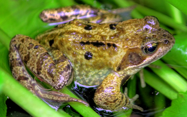

Kilka zwierząt żyjących na naszej planecie

Żaba wodna dorasta do 9 cm długości ciała. Tak samo jak w przypadku innych płazów bezogonowych, samiec jest mniejszy od samicy. Podczas godów samce przybierają lekko żółtawy odcień, podobnie jak żaba jeziorkowa.